Kişisel Rehber
Antrenman & Takviye Programı
Güçlü bel · Kas kütlesi · Bilek güreşi · Kol-Göğüs-Sırt gelişimi · Kalp sağlığı
L5 pars defekti · Listezis · L3-S1 disk dejenerasyonu
TSH Alt Sınır Uyarısı: TSH değerin 0.36 mIU/mL olup referans aralığının (0.35–4.94) alt sınırındadır. Yoğun antrenman TSH'yi daha da baskılayabilir. Antrenman sürecinde aşırı yorgunluk, kalp çarpıntısı veya uyku bozukluğu yaşarsan endokrinoloji kontrolü yapılması önerilir.
Antrenman Programı
Cuma
Pazar
Pazartesi
1
Klinik Core Stabilizasyonu & Isınma
Omurga zırhı — ana antrenmandan önce eksiksiz uygulanmalıdır
#HareketProtokolGIF
1
Kardiyo Isınma Zorunlu
Koşu bandında hafif-orta tempo yürüyüş. Postür tamamen dik — gövde öne eğilmesin.
Beldeki disklerin su tutma kapasitesini ve esnekliğini antrenman öncesi optimize eder.
5–10 dakika
Dik postür
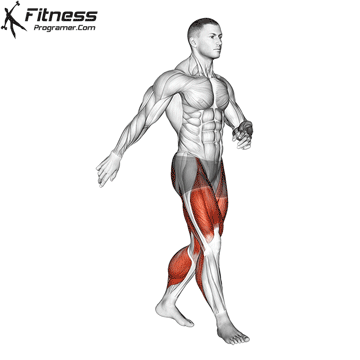
2
McGill Curl-Up
Belinizin altına ellerinizi koyarak doğal kavisinizi koruyun. Boynu aşırı bükmeden sadece omuzları yerden kaldırın. Her tekrarda 10 sn yukarda bekleyin.
Lomber omurgaya sıfır yük bindirerek pars defekti ve listezis çevresindeki derin kasları aktif eder.
3 × 8–10
10 sn statik
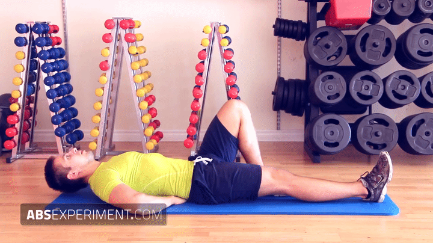
3
Bird Dog
Bacağı geriye uzatırken beli çukurlaştırmayın, kalçayı ve karnı sıkın. Kalça dışarı açılmasın. Her tekrarda 8 sn uzatarak bekleyin.
Nötr omurga pozisyonunu pekiştirir, intra-abdominal basıncı yönetir.
3 × 8–10
8 sn statik
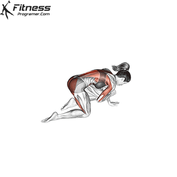
4
Side Plank
Dizler üzerinde (başlangıç) veya düz. Kalça sarkmasın, gövde tek düzlem. Her iki yöne uygulanır.
Lateral omurga stabilizasyonunu güçlendirerek lateral fleksiyon stresine karşı direnç oluşturur.
3 × 30–45 sn
Her yöne · Statik
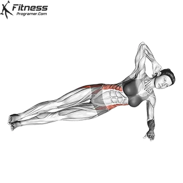
5
Pallof Press Anti-Rotasyon
Kablo veya bant ile. Kabloyu göğüs ortasından ileri doğru iterken gövdenin dönmesine izin vermeyin. Kalça ve karnı kilitleyin. Her iki yöne.
Disk fıtıklarının en büyük düşmanı olan ani rotasyon stresine karşı core direncini inşa eder.
3 × 12
2-0-2-1

2
Ana Hipertrofi & Güç (Revize)
Üst ve alt vücut antagonist süper setleri — mekanik yük belden alınıp hedef kaslara izole edilir
#HareketProtokolGIF
6
Chest Press Machine SÜPER SET Chest Supported
Göğüs destekli makinede oturun. Kürek kemiklerini arkada sabitleyin (retraksiyon). Beli aşırı çukurlaştırmadan göğsü yukarı kaldırarak itin.
Serbest ağırlıktaki bel stresini sıfırlayarak göğüste maksimum mekanik gerilim sağlar.
4 × 8–12
3-1-1-0

↓ SÜPER SET — ARA VERMEDEN ARDIŞIK ↓
7
Face Pull (Cable) SÜPER SET
Kablo makinesinde halat ile göğüs hizasında çekiş. Çekerken ellerinizi kulak hizasına doğru dışa açın. Sırt dik.
Arka omuz, trapez ve rotator cuff kaslarını çalıştırarak göğüs antrenmanına antagonist denge sağlar.
4 × 12–15
2-0-1-1

8
Lat Pulldown Machine SÜPER SET
Hiperekstansiyondan kaçın. Gövdeyi hafifçe geriye eğip barı üst göğse çek, kontrollü bırak. Aşağıda sırtı 1 sn sıkıştır.
Omurgaya dikey baskı yapmadan kanat kaslarını büyütür, bilek güreşindeki çekiş zincirini başlatır.
4 × 8–12
2-0-1-1

↓ SÜPER SET — ARA VERMEDEN ARDIŞIK ↓
9
Incline Chest Press veya Cable Fly SÜPER SET
Sehpa açısı 30° - 45°. Bel boşluğunu abartmadan üst göğse odaklanın.
Üst göğüs hacmini hedefler. Lat Pulldown'un antagonist dengesidir.
4 × 10–12
3-1-1-0
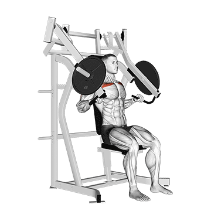
10
Chest-Supported T-Bar Row veya Incline DB Row
Sehpa açısı 30–45°. Göğsü sehpaya tamamen yasla. Çekiş sırasında göğsü sehpadan kaldırarak beli bükme. Tepe noktada sırtı 1 sn sıkıştır.
L5-S1 bölgesine binen yükü sehpa üzerine yıkarak sırt kalınlığını güvenle inşa eder.
4 × 8–12
2-1-1-1
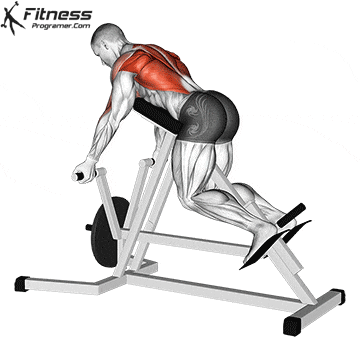
11
Leg Press Machine SÜPER SET Butt-Wink Yasak
45° — geniş ayak yerleşimi. Ağırlığı indirirken kalça koltuktan asla kalkmasın (butt-wink), L4-5 disk basısını artırır. Kalçayı koltuğa kilitle.
Yüklü squat riski olmadan büyük kas gruplarını çalıştırarak doğal testosteron salınımını tetikler.
4 × 10–12
3-1-1-0

↓ SÜPER SET — ARA VERMEDEN ARDIŞIK ↓
12
Seated Leg Curl SÜPER SET Sadece Seated
⚠️ Lying (yüz üstü) versiyonu KULLANILMAZ. Yalnızca oturarak (seated) yapılacak. Hamstringleri sıkıştırırken pelvis sehpadan kalkmasın.
Deadlift riski olmadan hamstring grubunu izole eder, diz dengesini kurar ve Leg Press'e antagonist çalışır.
4 × 10–12
2-0-1-1
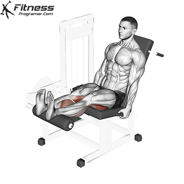
13
Hip Thrust Machine veya Bant Hip Thrust
Makinede veya bench + bant ile. Sırtın üst kısmı bench'e yaslanır, kalça tam aşağıda başlar, tepe noktada gluteyi 1 sn sıkıştır. Beli hiperekstansiyona sokma — hareket kalçadan gelir, belden değil. Pelvik tilt nötrde kalmalı. Ağrı hissedilirse omuzların yerde olduğu Glute Bridge varyasyonuna geçilmelidir.
Gluteus maximus en büyük kas grubu olarak testosteron salınımının birincil tetikleyicisidir. Cinsel sağlık, pelvik taban gücü ve uzun vadeli hormonal denge için doğrudan katkı sağlar — bele sıfır aksiyel yük.
3 × 12–15
2-1-1-0
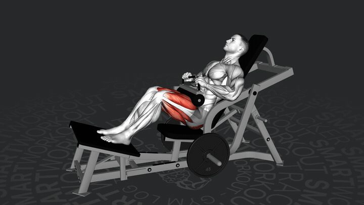
14
Cable Lateral Raise veya Seated DB
Ayakta kablo ile momentum almayın. Oturarak dumbbell ile yapılıyorsa sırt sehpaya tam yaslansın. Yukarıda mikro bekleme.
Omurgaya yük bindirmeden lateral deltoidi izole ederek omuz genişliğini inşa eder.
3 × 12–15
2-0-1-1
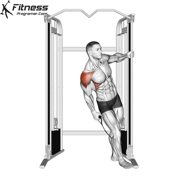
3
Kol & İleri Seviye Bilek Güreşi Spesifik
Kavrama · Pronasyon · Supinasyon · Biceps-Triceps zinciri
#HareketProtokolGIF
15
Incline Dumbbell Biceps Curl
Sehpayı 45–60°'ye ayarla. Dirsekleri gövdenin gerisinde sabitle, sadece ön kol hareket etsin.
Biceps uzun başını maksimum esnemede çalıştırarak kol hacmini ve bilek güreşindeki back pressure gücünü büyütür.
3 × 10–12
3-0-1-1
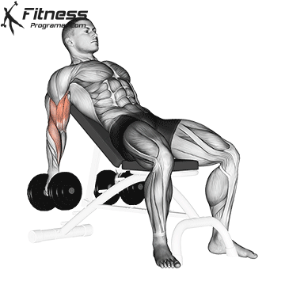
16
Skull Crusher Teknik Kritik
Flat bench'te yatarak. Hareketi her zaman alnın 2-3 cm gerisine indir — başın arkasına ASLA indirme (dirsekler açılır, eklem stresi artar). Dirsekler sabit ve birbirine paralel.
Alternatif: Dirsekte rahatsızlık hissedersen → Skull Crusher'ı 2 sete düşür + 2 set Cable Triceps Pushdown ekle (Tempo: 2-0-1-1). Bu kombinasyon triceps uzun baş + lateral baş dengesini korur ve eklem stresini dağıtır.
Overhead hareketlerdeki bel fıtığı/kayma riskini tamamen yok ederek triceps uzun başını güvenle izole eder.
3 × 10–12
3-0-1-0
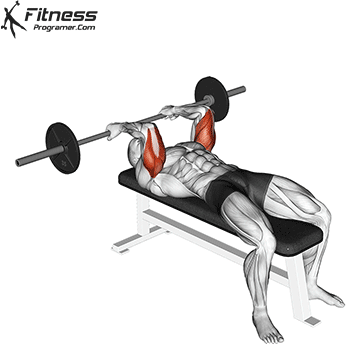
17
Rope Hammer Curl
Kablo makinesinde halat (rope) aparatı ile. Başparmaklar yukarı bakacak (nötr) pozisyonda, dirsekleri gövdeye sabitleyerek curl yapın. Tepe noktada halatın uçlarını hafifçe dışa açarak sıkıştırın.
Brachioradialis ve brachialis'i uyararak ön kol hacmini artırır ve çekiş zincirini kuvvetlendirir.
3 × 8–12
2-1-1-0
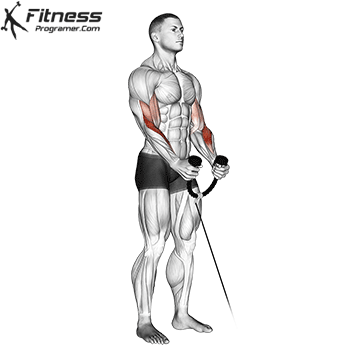
18
Dumbbell Pronation Top-Roll Gücü
Ön kolu sehpaya yasla. Dumbbell'ın bir ucuna bağlı kemeri elin dışından dolayarak, avuç yere bakacak yönde bileği döndür (içe rotasyon).
Rakibin elini dışa açma (top-roll) tekniği ve pronasyon gücünü doğrudan inşa eder.
3 × 12
2-0-1-1
GIF
buraya
buraya
19
Dumbbell Supination Hook Gücü
Ön kolu dize veya sehpaya sabitle. Dumbbell'ı asimetrik (ağırlık başparmak tarafında) altından kavrayıp, avuç tavana bakacak şekilde içe döndür. Tepede 1 sn sık.
Bilek güreşinde rakibin bileğini bükerek kendi alanına çekmeyi sağlayan Hook gücünü inşa eder.
3 × 12–15
2-1-1-1
GIF
buraya
buraya
20
Dumbbell Radial Deviation (Rising) Rising Gücü
Elinize tek tarafı yüklü bir dumbbell veya kısa bar/sledgehammer alın. Kolunuzu sabit tutup bileği başparmak yönünde yukarı (radial deviasyon) kaldırın.
Bilek güreşinde en kritik kuvvetlerden biri olan "Rising" gücünü inşa eder, rakibe üstünlük kurmayı sağlar.
3 × 12–15
2-0-1-1
GIF
buraya
buraya
21
Wrist Curl SÜPER SET
Barı parmak uçlarına kadar yuvarla, yukarı bük (kavrama gücü).
Bileğin iç fleksörlerini uyararak kavrama gücünü artırır.
3 × 15
2-1-2-0
GIF
buraya
buraya
↓ SÜPER SET — ARA VERMEDEN ARDIŞIK ↓
22
Reverse Wrist Curl SÜPER SET
Ön kolun üstünü sehpaya tamamen sabitle, hareketi izole et.
Bileğin dış fleksörlerini uyararak bilek kalınlığını ve dengesini sağlar.
3 × 15
2-1-2-0
GIF
buraya
buraya
Progression & Deload Protokolü
Çift İlerleme Modeli
- 1Hedef tekrar aralığının üst sınırına (örn: 12) tüm setlerde temiz formla ulaş
- 2Sonraki antrenmanda ağırlığı en küçük birim kadar artır (2.5 kg veya 1 plaka)
- 3Yeni ağırlıkla tekrar alt sınıra (örn: 8) düşer — oradan tekrar 12'ye tırman
- 4Beli bozmadan tamamlama şartı — teknik bozuluyorsa ağırlık artırılmaz
Deload — Her 6–8 Hafta
- 1Tüm ağırlıkları %30–40 düşür
- 2Her harekette set sayısını 1 azalt (4→3, 3→2)
- 3Failure'a gitme — RPE 5–6 seviyesinde pompalama
- 4Core bölümü (McGill Big 3 + Pallof) tam performansta devam eder
Pazar – Pazartesi Uygulama Notu
Pazar
Haftalık dinlenmeden yeni çıkıldığı için en güçlü gün. Progression protokolünü sonuna kadar zorla, ağırlık artırmayı dene.
Pazartesi
Pazar'dan kalan kas ve tendon yorgunluğu nedeniyle ağırlıkları %10–15 hafiflet. Özellikle ön kol, supinasyon ve pronasyon hareketlerinde temiz form ve kas pompasına (RPE 7–8) odaklan — failure yasak.
Günlük Takviye Listesi
Zaman
Ürün
Doz
Amaç & Notlar
Her GünAntrenman: Sonrası
Off Günler: Kahvaltıyla
Off Günler: Kahvaltıyla
Kreatin Monohidrat
Tercihen Creapure sertifikalı
Tercihen Creapure sertifikalı
5 g
(1 düz ölçek)
(1 düz ölçek)
Kas hücrelerindeki ATP yenileme hızını artırarak güç, patlayıcılık ve antrenman hacmini doğrudan destekler. Bilek güreşindeki maksimal kasılma gücüne direkt katkı sağlar. DHT dönüşümünü destekleyerek doğal testosteron profilini güçlendirir. Kreatin monohidrat, klinik literatürdeki en iyi kanıtlanmış takviyedir — yükleme fazı gerekmez, 5 g/gün sabit doz yeterlidir. Bol su ile alınmalıdır (günlük en az 2.5 litre su tüketimi önerilir).
Öğle YemeğiTok
Ocean D3 K2 Damla
5 Damla
D vitamini seviyeni (24.9 ng/mL) yükselterek pars defekti bölgesinde kemik kalitesini ve kalsiyum döngüsünü destekler. Yağlı öğünle emilim maksimuma çıkar.
Akşam YemeğiTok
Solgar Omega-3 950 mg
1 Kapsül
L3-S1 disk enflamasyonunu ve ödemi içeriden baskılar. Uzun vadede kronik düşük HDL (31-33 mg/dL) değerini yukarı taşımayı ve kardiyovasküler sağlığı desteklemeyi hedefler.
GeceYatmadan Önce
Venatura Magnezyum Kompleks
Bisglisinat + Sitrat + P5P
Bisglisinat + Sitrat + P5P
1 Kapsül
Omurga çevresi kas spazmlarını gevşetir, uyku kalitesini destekler. Kural: Çay/kahveden en az 2 saat sonra alınmalıdır.
Liste minimalize edilmiştir. Sadece hedeflere (kas/güç inşası ve pars defekti onarımı) en çok etki eden kanıtlanmış takviyeler bırakılmış, hap yorgunluğu yapabilecek gereksiz takviyeler listeden temizlenmiştir.
Bu rehber kişisel sağlık raporları (MR, BT, kan tahlili) temel alınarak hazırlanmıştır.
Herhangi bir ağrı veya şikâyet durumunda antrenmana ara ver ve hekiminize danışın.
Herhangi bir ağrı veya şikâyet durumunda antrenmana ara ver ve hekiminize danışın.